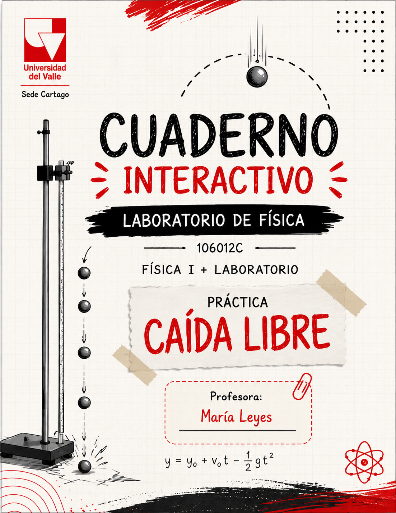

Universidad del Valle — Sede Cartago · Laboratorio de Física I
ÍNDICE interactivo
Toca cualquier sección para ir directamente a esa página del cuaderno.

Toca cualquier sección para ir directamente a esa página del cuaderno.
Estudio experimental del movimiento de un cuerpo en caída libre
En esta práctica de laboratorio estudiarás el movimiento de un balín que se deja caer desde el reposo bajo la acción de la gravedad. Utilizando un instrumento con sensor, medirás el tiempo de caída del balín para seis alturas diferentes y registrarás tus datos en las tablas de este cuaderno.
Con las parejas de valores altura–tiempo construirás una gráfica experimental, obtendrás la ecuación que describe el movimiento y, a partir de ella, determinarás experimentalmente el valor de la aceleración del balín, para luego compararlo con el valor conocido de la aceleración de la gravedad.
¿Qué buscamos con esta experiencia?
Estudiar el movimiento uniformemente acelerado de un cuerpo que cae bajo la acción de la gravedad, a partir de mediciones experimentales de altura y tiempo.
Calcular el valor experimental de la aceleración del balín y compararlo con el valor conocido de la aceleración de la gravedad.
Estos son los tres elementos que usarás en el montaje.
Mide con precisión el tiempo de caída del balín entre la liberación y el impacto.
Permite medir la altura h desde la cual se libera el balín.
Esfera metálica que se deja caer libremente; es el cuerpo cuyo movimiento estudiamos.
La caída libre como movimiento uniformemente acelerado
Un cuerpo está en caída libre cuando se mueve únicamente bajo la acción de la gravedad (despreciando la resistencia del aire). En ese caso, su rapidez aumenta de manera uniforme mientras cae: se trata de un movimiento uniformemente acelerado (MUA), con aceleración constante dirigida hacia abajo.
Si el balín parte del reposo y cae una altura h en un tiempo t con aceleración constante a, entonces:
La altura no crece linealmente con el tiempo: crece con el cuadrado del tiempo. Por eso, al duplicar el tiempo de caída, la distancia recorrida se multiplica por cuatro.
Mueve el control de altura h, suelta el balín y observa cómo cambian la posición y el tiempo. Las marcas muestran la posición del balín en intervalos iguales de tiempo: fíjate cómo se van separando cada vez más.
La animación se muestra en cámara lenta (×4) para poder apreciar el movimiento. El tiempo indicado es el tiempo físico real (con a = 9.8 m/s²).
Pasa el cursor (o toca) cada parte del montaje para ver su nombre.
Sigue estos pasos en orden. La práctica se realiza con el montaje de la página anterior.
Coloca el sensor del instrumento a la altura que desees y registra su valor en la casilla h de la Tabla 1.
Pon el balín en el imán del instrumento y activa el mecanismo de liberación para que el balín caiga.
Mide tres veces el tiempo de caída del balín y registra los tres valores en la Tabla 1.
Repite los pasos 2 y 3 hasta completar la Tabla 1 con sus tres mediciones de tiempo.
Repite todo el procedimiento para 5 alturas diferentes y completa las Tablas 2, 3, 4, 5 y 6.
Observa tus parejas de datos altura – tiempo promedio antes de graficar.
Cada barra representa una altura h; a la derecha aparece el tiempo promedio t̄ con el que cayó el balín desde esa altura.
Esta tabla se completa automáticamente con las alturas y los tiempos promedio de las Tablas 1 a 6. El promedio se calcula como:
| Tabla | h (m) | t̄ (s) |
|---|
Si alguna fila aparece vacía, regresa a la tabla correspondiente y completa la altura y las tres mediciones de tiempo.
Altura h (eje Y, en metros) en función del tiempo promedio t̄ (eje X, en segundos). La gráfica se actualiza sola cuando cambias tus datos.
Esta es la ecuación obtenida a partir del ajuste de tus datos.
Si el ajuste corresponde a una relación cuadrática (una parábola), significa que la altura recorrida crece con el cuadrado del tiempo, exactamente como predice el modelo de caída libre para un cuerpo que parte del reposo. El número que multiplica a t² (el coeficiente cuadrático) contiene la información sobre la aceleración del balín, como verás en la siguiente página.
Observa también qué tan cerca pasan los puntos experimentales de la curva de ajuste: pequeñas separaciones son normales y provienen de la incertidumbre experimental de las mediciones.
Compara tu ecuación experimental con el modelo teórico y despeja a.
Para un cuerpo que parte del reposo:
Aún no hay ecuación experimental. Completa tus tablas de datos.
Al comparar ambas expresiones, el coeficiente que acompaña a t² debe ser igual a ½·a. Es decir: ½·a = k, de donde a = 2k.
¿Qué tan cerca quedó tu resultado del valor de referencia?
Cuando tengas tu valor experimental, aquí verás la diferencia con el valor de referencia y el error relativo porcentual.
Responde con tus propias palabras, apoyándote en tu gráfica y tus datos. Tus respuestas se guardan automáticamente.
De acuerdo con la gráfica obtenida, ¿qué tipo de función relaciona la altura con el tiempo?
¿El valor obtenido para la aceleración se parece a alguna constante conocida? En caso afirmativo, ¿a cuál constante se parece?
De acuerdo con los datos obtenidos, ¿qué tipo de movimiento describe el balín?
Escribe tres conclusiones sobre la práctica, con tus propias palabras.
Toca cada término para ver su significado.
Material de apoyo de la práctica.
Revisa que todas tus tablas, respuestas y conclusiones estén completas. Tu trabajo queda guardado en este navegador.